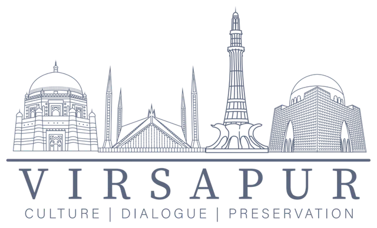

Archive indexes
Story title index
A compact reading index of the Archive. For keyword, region and theme filters, use Browse all stories.
Stories will appear here as they are published.

Get in touchArchive indexes
A compact reading index of the Archive. For keyword, region and theme filters, use Browse all stories.
Stories will appear here as they are published.